<!DOCTYPE html>
<html xmlns="http://www.w3.org/1999/xhtml" lang="en"></html>
  <head>
    <meta charset="utf-8" />
    <meta name="viewport" content="width=device-width, initial-scale=1.0" />
<title>Mësimi 9 – Përsëritja &#8212; Programimi i një pajisje Micro:bit në MakeCode </title>
    <link rel="stylesheet" href="_static/pygments.css" type="text/css" />
    <link rel="stylesheet" href="_static/basic.css" type="text/css" />
    <link rel="stylesheet" type="text/css" href="_static/activecode.css" />
    <link rel="stylesheet" type="text/css" href="_static/codemirror.css" />
    <link rel="stylesheet" type="text/css" href="_static/clickable.css" />
    <link rel="stylesheet" type="text/css" href="_static/pytutor.css" />
    <link rel="stylesheet" type="text/css" href="_static/modal-basic.css" />
    <link rel="stylesheet" type="text/css" href="_static/datafile.css" />
    <link rel="stylesheet" type="text/css" href="_static/dragndrop.css" />
    <link rel="stylesheet" type="text/css" href="_static/fitb.css" />
    <link rel="stylesheet" type="text/css" href="_static/matrixeq.css" />
    <link rel="stylesheet" type="text/css" href="_static/parsons.css" />
    <link rel="stylesheet" type="text/css" href="_static/lib/prettify.css" />
    <link rel="stylesheet" type="text/css" href="_static/poll.css" />
    <link rel="stylesheet" type="text/css" href="_static/showEval.css" />
    <link rel="stylesheet" type="text/css" href="_static/tabbedstuff.css" />
    <link rel="stylesheet" type="text/css" href="https://stackpath.bootstrapcdn.com/bootstrap/4.2.1/css/bootstrap.min.css" />
    <link rel="stylesheet" type="text/css" href="_static/video.css" />
    <link rel="stylesheet" type="text/css" href="_static/webgldemo.css" />
    <link rel="stylesheet" type="text/css" href="_static/webglinteractive.css" />
    <link rel="stylesheet" type="text/css" href="_static/karel.css" />
    <link rel="stylesheet" type="text/css" href="_static/notes.css" />
    <link rel="stylesheet" type="text/css" href="_static/simanim.css" />
    <link rel="stylesheet" type="text/css" href="_static/pycode.css" />
    <link rel="stylesheet" type="text/css" href="_static/p5js.css" />
    <link rel="stylesheet" type="text/css" href="_static/gallery.css" />
    <link rel="stylesheet" type="text/css" href="https://stackpath.bootstrapcdn.com/bootstrap/4.2.1/css/bootstrap.min.css" />
    <link rel="stylesheet" type="text/css" href="_static/video.css" />
    <link rel="stylesheet" href="_static/user-highlights.css" type="text/css" />
    <link rel="stylesheet" href="https://use.fontawesome.com/releases/v5.1.1/css/all.css" type="text/css" />
    <link rel="stylesheet" href="_static/bootstrap-4.0.0-dist/css/bootstrap.min.css" type="text/css" />
    <link rel="stylesheet" href="_static/flatly.min.css" type="text/css" />
    <link rel="stylesheet" href="_static/petlja-runestone.css" type="text/css" />
    <script id="documentation_options" data-url_root="./" src="_static/documentation_options.js"></script>
    <script type="text/javascript" src="_static/runestonebase.js"></script>
    <script type="text/javascript" src="_static/jquery.js"></script>
    <script type="text/javascript" src="_static/underscore.js"></script>
    <script type="text/javascript" src="_static/doctools.js"></script>
    <script type="text/javascript" src="_static/language_data.js"></script>
    <script type="text/javascript" src="_static/jquery.highlight.js"></script>
    <script type="text/javascript" src="_static/bookfuncs.js"></script>
    <script type="text/javascript" src="_static/codemirror.js"></script>
    <script type="text/javascript" src="_static/xml.js"></script>
    <script type="text/javascript" src="_static/css.js"></script>
    <script type="text/javascript" src="_static/python.js"></script>
    <script type="text/javascript" src="_static/htmlmixed.js"></script>
    <script type="text/javascript" src="_static/javascript.js"></script>
    <script type="text/javascript" src="_static/jquery_i18n/CLDRPluralRuleParser.js"></script>
    <script type="text/javascript" src="_static/jquery_i18n/jquery.i18n.js"></script>
    <script type="text/javascript" src="_static/jquery_i18n/jquery.i18n.messagestore.js"></script>
    <script type="text/javascript" src="_static/jquery_i18n/jquery.i18n.fallbacks.js"></script>
    <script type="text/javascript" src="_static/jquery_i18n/jquery.i18n.language.js"></script>
    <script type="text/javascript" src="_static/jquery_i18n/jquery.i18n.parser.js"></script>
    <script type="text/javascript" src="_static/jquery_i18n/jquery.i18n.emitter.js"></script>
    <script type="text/javascript" src="_static/jquery_i18n/jquery.i18n.emitter.bidi.js"></script>
    <script type="text/javascript" src="_static/activecode-i18n.en.js"></script>
    <script type="text/javascript" src="_static/skulpt.min.js"></script>
    <script type="text/javascript" src="_static/skulpt-stdlib.js"></script>
    <script type="text/javascript" src="_static/activecode.js"></script>
    <script type="text/javascript" src="_static/clike.js"></script>
    <script type="text/javascript" src="_static/timed_activecode.js"></script>
    <script type="text/javascript" src="_static/animationbase.js"></script>
    <script type="text/javascript" src="_static/mchoice.js"></script>
    <script type="text/javascript" src="_static/timedmc.js"></script>
    <script type="text/javascript" src="_static/timed.js"></script>
    <script type="text/javascript" src="_static/mchoice-i18n.en.js"></script>
    <script type="text/javascript" src="_static/clickable.js"></script>
    <script type="text/javascript" src="_static/timedclickable.js"></script>
    <script type="text/javascript" src="_static/d3.v2.min.js"></script>
    <script type="text/javascript" src="_static/jquery.ba-bbq.min.js"></script>
    <script type="text/javascript" src="_static/jquery.jsPlumb-1.3.10-all-min.js"></script>
    <script type="text/javascript" src="_static/pytutor.js"></script>
    <script type="text/javascript" src="_static/codelens.js"></script>
    <script type="text/javascript" src="_static/datafile.js"></script>
    <script type="text/javascript" src="_static/dragndrop.js"></script>
    <script type="text/javascript" src="_static/timeddnd.js"></script>
    <script type="text/javascript" src="_static/dragndrop-i18n.en.js"></script>
    <script type="text/javascript" src="_static/fitb.js"></script>
    <script type="text/javascript" src="_static/timedfitb.js"></script>
    <script type="text/javascript" src="_static/fitb-i18n.en.js"></script>
    <script type="text/javascript" src="_static/matrixeq.js"></script>
    <script type="text/javascript" src="_static/lib/prettify.js"></script>
    <script type="text/javascript" src="_static/lib/hammer.min.js"></script>
    <script type="text/javascript" src="_static/parsons.js"></script>
    <script type="text/javascript" src="_static/parsons-i18n.en.js"></script>
    <script type="text/javascript" src="_static/timedparsons.js"></script>
    <script type="text/javascript" src="_static/poll.js"></script>
    <script type="text/javascript" src="_static/reveal.js"></script>
    <script type="text/javascript" src="_static/shortanswer.js"></script>
    <script type="text/javascript" src="_static/timed_shortanswer.js"></script>
    <script type="text/javascript" src="_static/showEval.js"></script>
    <script type="text/javascript" src="_static/tabbedstuff.js"></script>
    <script type="text/javascript" src="_static/runestonevideo.js"></script>
    <script type="text/javascript" src="_static/webglinteractive.js"></script>
    <script type="text/javascript" src="_static/FileSaver.min.js"></script>
    <script type="text/javascript" src="_static/Blob.js"></script>
    <script type="text/javascript" src="_static/karelCorner.js"></script>
    <script type="text/javascript" src="_static/karelRobot.js"></script>
    <script type="text/javascript" src="_static/karelWorld.js"></script>
    <script type="text/javascript" src="_static/karelRobotDrawer.js"></script>
    <script type="text/javascript" src="_static/karelUI.js"></script>
    <script type="text/javascript" src="_static/karel.js"></script>
    <script type="text/javascript" src="_static/karel-i18n.en.js"></script>
    <script type="text/javascript" src="_static/notes.js"></script>
    <script type="text/javascript" src="_static/pygamelib-init.js"></script>
    <script type="text/javascript" src="_static/blockly/blockly_compressed.js"></script>
    <script type="text/javascript" src="_static/blockly/blocks_compressed.js"></script>
    <script type="text/javascript" src="_static/blockly/python_compressed.js"></script>
    <script type="text/javascript" src="_static/blockly/msg-sr.js"></script>
    <script type="text/javascript" src="_static/blockpy/utilities.js"></script>
    <script type="text/javascript" src="_static/blockpy/python_errors.js"></script>
    <script type="text/javascript" src="_static/blockpy/ast_node_visitor.js"></script>
    <script type="text/javascript" src="_static/blockpy/abstract_interpreter.js"></script>
    <script type="text/javascript" src="_static/blockpy/pytifa.js"></script>
    <script type="text/javascript" src="_static/blockpy/abstract_interpreter_definitions.js"></script>
    <script type="text/javascript" src="_static/blockpy/python_to_blockly.js"></script>
    <script type="text/javascript" src="_static/blockpy/imported.js"></script>
    <script type="text/javascript" src="_static/blockpy/blocks/class.js"></script>
    <script type="text/javascript" src="_static/blockpy/blocks/comment.js"></script>
    <script type="text/javascript" src="_static/blockpy/blocks/comprehensions.js"></script>
    <script type="text/javascript" src="_static/blockpy/blocks/dict.js"></script>
    <script type="text/javascript" src="_static/blockpy/blocks/if.js"></script>
    <script type="text/javascript" src="_static/blockpy/blocks/io.js"></script>
    <script type="text/javascript" src="_static/blockpy/blocks/lists.js"></script>
    <script type="text/javascript" src="_static/blockpy/blocks/sets.js"></script>
    <script type="text/javascript" src="_static/blockpy/blocks/loops.js"></script>
    <script type="text/javascript" src="_static/blockpy/blocks/parking.js"></script>
    <script type="text/javascript" src="_static/blockpy/blocks/tuple.js"></script>
    <script type="text/javascript" src="_static/blockpy/blocks/turtles.js"></script>
    <script type="text/javascript" src="_static/blockpy/blocks/text.js"></script>
    <script type="text/javascript" src="_static/blockpy-modal.js"></script>
    <script type="text/javascript" src="_static/simanim.js"></script>
    <script type="text/javascript" src="https://cdn.jsdelivr.net/pyodide/v0.16.1/full/pyodide.js"></script>
    <script type="text/javascript" src="_static/pycode.js"></script>
    <script type="text/javascript" src="//toolness.github.io/p5.js-widget/p5-widget.js"></script>
    <script type="text/javascript" src="_static/p5js.js"></script>
    <script type="text/javascript" src="_static/gallery.js"></script>
    <script type="text/javascript" src="_static/petljavideo.js"></script>
    <script type="text/javascript" src="_static/mchoice-i18n.sr-Cyrl.js"></script>
    <script type="text/javascript" src="_static/mchoice-i18n.sr.js"></script>
    <script type="text/javascript" src="_static/mchoice-i18n.sr-Latn.js"></script>
    <script type="text/javascript" src="_static/dragndrop-i18n.sr-Cyrl.js"></script>
    <script type="text/javascript" src="_static/dragndrop-i18n.sr.js"></script>
    <script type="text/javascript" src="_static/dragndrop-i18n.sr-Latn.js"></script>
    <script type="text/javascript" src="_static/fitb-i18n.sr-Cyrl.js"></script>
    <script type="text/javascript" src="_static/fitb-i18n.sr.js"></script>
    <script type="text/javascript" src="_static/fitb-i18n.sr-Latn.js"></script>
    <script type="text/javascript" src="_static/parsons-i18n.sr-Cyrl.js"></script>
    <script type="text/javascript" src="_static/parsons-i18n.sr.js"></script>
    <script type="text/javascript" src="_static/parsons-i18n.sr-Latn.js"></script>
    <script type="text/javascript" src="_static/activecode-i18n.sr-Cyrl.js"></script>
    <script type="text/javascript" src="_static/activecode-i18n.sr.js"></script>
    <script type="text/javascript" src="_static/activecode-i18n.sr-Latn.js"></script>
    <script type="text/javascript" src="_static/jquery-ui-1.10.3.custom.min.js"></script>
    <script type="text/javascript" src="_static/jquery-fix.js"></script>
    <script type="text/javascript" src="_static/bootstrap-4.0.0-dist/js/bootstrap.min.js"></script>
    <script type="text/javascript" src="_static/bootstrap-4.0.0-dist/js/bootstrap.bundle.min.js"></script>
    <script type="text/javascript" src="_static/bootstrap-sphinx.js"></script>
    <script type="text/javascript" src="_static/waypoints.min.js"></script>
    <script type="text/javascript" src="_static/rangy-core.js"></script>
    <script type="text/javascript" src="_static/rangy-textrange.js"></script>
    <script type="text/javascript" src="_static/rangy-cssclassapplier.js"></script>
    <script type="text/javascript" src="_static/user-highlights.js"></script>
    <script type="text/javascript" src="_static/jquery.idle-timer.js"></script>
    <script type="text/javascript" src="_static/processing-1.4.1.min.js"></script>
    <script type="text/javascript" src="_static/jquery.hotkey.js"></script>
    <script type="text/javascript" src="_static/jquery-migrate-1.2.1.min.js"></script>
    <link rel="index" title="Index" href="genindex.html" />
    <link rel="search" title="Search" href="search.html" />
<meta charset='utf-8'>
<meta http-equiv='X-UA-Compatible' content='IE=edge,chrome=1'>
<meta content='width=device-width, initial-scale=1.0, maximum-scale=1.0, user-scalable=0' name='viewport' />
<link rel="shortcut icon" href="_static/favicon.ico" type="image/ico" />

<script type="text/javascript">
  eBookConfig = {};
  eBookConfig.host = 'http://127.0.0.1:8000' ? 'http://127.0.0.1:8000' : 'http://127.0.0.1:8000';
  eBookConfig.app = eBookConfig.host + '/runestone';
  eBookConfig.ajaxURL = eBookConfig.app + '/ajax/';
  eBookConfig.course = 'Programimi i një pajisje Micro:bit në MakeCode ';
  eBookConfig.logLevel = '0';
  eBookConfig.loginRequired = 'false';
  eBookConfig.build_info = "";
  eBookConfig.isLoggedIn = false;
  eBookConfig.useRunestoneServices = 'false';
  eBookConfig.python3 = 'true';
  eBookConfig.basecourse = 'Programimi i një pajisje Micro:bit në MakeCode ';
  eBookConfig.runestone_version = '';
  eBookConfig.imagesDir = '_images/';
  eBookConfig.staticDir = '_static/';
  if(typeof(Sk) != "undefined")
      Sk.imgPath = eBookConfig.imagesDir;
</script>

<div id="fb-root"></div>


  </head><body>


<!-- Begin navbar -->

<nav id="navbar" class="navbar navbar-default navbar-fixed-top" role="navigation">

  <div class="container">

    <div class="navbar-header">
      <button type="button" class="navbar-toggle collapsed" data-toggle="collapse" data-target="#bs-example-navbar-collapse-1">
        <span class="sr-only">Toggle navigation</span>
        <span class="icon-bar"></span>
        <span class="icon-bar"></span>
        <span class="icon-bar"></span>
      </button>
      
    </div>

    <div class="collapse navbar-collapse" id="bs-example-navbar-collapse-1" style="margin-top: 10px; margin-left: 25px;">
      <ul class="nav navbar-nav">
        <li class="active"><a href="./">Programimi i një pajisje Micro:bit në MakeCode </a></li>
      </ul>
    </div>
  </div>
</nav>


<div class="container col-md-12" id="continue-reading"></div>

<div class="container col-md-8 col-md-offset-2" id="main-content" style="margin-top: 70px;">
  
  <div class="section" id="mesimi-9-perseritja">
<h1>Mësimi 9 – Përsëritja<a class="headerlink" href="#mesimi-9-perseritja" title="Permalink to this headline">¶</a></h1>
<p>Në këtë mësim do të flasim për:</p>
<ul class="simple">
<li><p>përsëritjen e pjesëve të programit;</p></li>
<li><p>përsëritjen e pjesëve të programit.</p></li>
</ul>
<p>Në natyrë ekzistojnë procese të cilat përsëriten pareshtur ose kohë pas kohe (p.sh. batica dhe zbatica). Ashtu si në natyrë edhe në programim është e nevojshme që disa pjesë të programit të ekzekutohen disa herë për të zgjidhur detyrat përkatëse.</p>
<p>Programet me hapa të caktuar që përsëriten disa herë quhen <strong>programe ciklike</strong> ose <strong>programet e përsëritjes</strong>.</p>
<p>Për të mos shkruar të njëjtën komandë disa herë ekziston një strukturë programore e nyjës (cikël) e cila mundëson përsëritjen e një ose më shumë komandave. Për këto programe themi që përmbajnë përsëritje, të cilat i quajmë cikle.</p>
<p>Përsëritja e komandave është një dukuri e përhapur në programim.</p>
<p>MakeCode përmban tri lloje blloqesh në të cilat vendosen blloqet tjera, ekzekutimi i të cilëve duhet të përsëritet:</p>
<ul class="simple">
<li><p>­     me numër të caktuar të përsëritjeve:</p></li>
</ul>
<a class="reference internal image-reference" href="_images/146.png">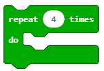</a>
<p>Ky bllok duhet të përdoret kur e dimë paraprakisht numrin e saktë të përsëritjeve (gjithashtu thuhet edhe iteracion). ¬
­</p>
<ul class="simple">
<li><p>me numër të pakufizuar të përsëritjeve (pa ndërprerje, deri sa shfrytëzuesi të ndalë programin):</p></li>
</ul>
<a class="reference internal image-reference" href="_images/147.png">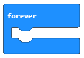</a>
<p>Ky është një nga blloqet i cili përdoret më së shpeshti. Ekzekutimi i tij ndalet duke klikuar butonin për ndaljen e punës së programit (<a class="reference internal" href="_images/148.png"></a>).</p>
<ul class="simple">
<li><p>derisa nuk plotësohet një kusht i caktuar:</p></li>
</ul>
<a class="reference internal image-reference" href="_images/149.png">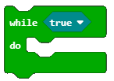</a>
<p>Ky bllok duhet të përdoret kur nuk e dimë sa herë duhet të ekzekutohen blloqet brenda bllokut për përsëritje dhe për këtë arsye duam që ato të ekzekutohen derisa të plotësohet një kusht i caktuar.</p>
<p>Të krijojmë një program që aktivizon tingullin i cili përsëritet një numër të caktuar herësh, çdo herë kur shfrytëzuesi e lëviz Micro:bit-in.</p>
<p><strong>Faza 1</strong></p>
<p><strong>Të menduarit e problemit:</strong> Kur shkundet ose bëhet çfarëdo lëvizjeje me pajisjen Micro:bit, tingulli do të përsëritet 3 herë.</p>
<blockquote>
<div><p><strong>Hapi 1:</strong> Detektoni lëvizjen</p>
<p><strong>Hapi 2:</strong> Përsëriteni tingullin tri herë</p>
</div></blockquote>
<p><strong>Faza 2</strong></p>
<p>Hapni MakeCode për të zgjedhur dhe renditur blloqet në hapësirën për programim.</p>
<p>Në faqen e internetit në <a class="reference external" href="https://makecode.microbit.org">https://makecode.microbit.org</a> filloni një projekt të ri duke klikuar butonin New Project <a class="reference internal" href="_images/86.png"></a>.</p>
<p>Për të mundësuar detektimin e çdo lëvizjeje, në hapësirën për programim tërheqim bllokun on shake nga kategoria Input:</p>
<a class="reference internal image-reference" href="_images/150.png">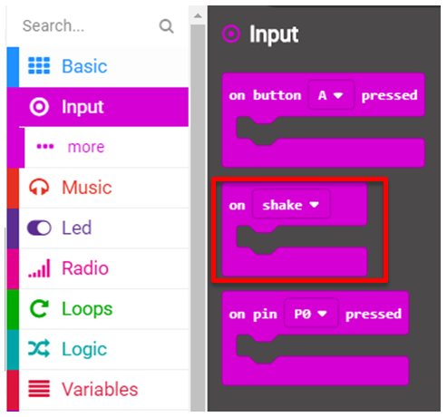</a>
<p>Pasi duam që zëri të përsëritet tri herë, në bllokun <em>on shake</em> tërheqim bllokun <em>repeat</em> .. for nga kategoria <em>Loops</em>. Në hapësirën ku shënohet vlera (numri) shënojmë numrin 3.</p>
<a class="reference internal image-reference" href="_images/151.png">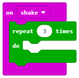</a>
<p>Në bllokun e mësipërm do të tërheqim bllokun <em>play tone … for</em>… nga kategoria <a href="#id1"><span class="problematic" id="id2">*</span></a>Musi*c me të cilin riprodhohet tingulli.</p>
<div class="system-message" id="id1">
<p class="system-message-title">System Message: WARNING/2 (<span class="docutils literal">F:\petlja\bc\albanci priručnik\MicrobitAl\_sources\Mësimi 9 –Përsëritja.rst</span>, line 80); <em><a href="#id2">backlink</a></em></p>
<p>Inline emphasis start-string without end-string.</p>
</div>
<a class="reference internal image-reference" href="_images/152.png">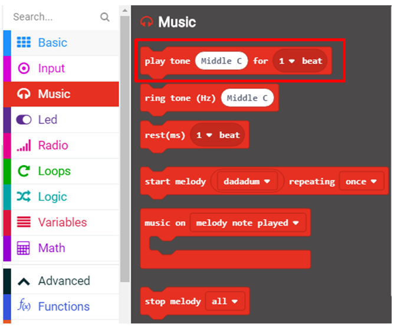</a>
<p>Në bllokun e paraqitur nga lista rënëse zgjedhim tonin dhe gjatësinë.</p>
<a class="reference internal image-reference" href="_images/153.png">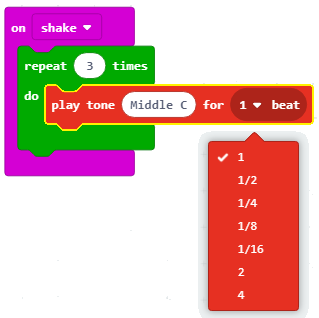</a>
<p>Si duket kodi në fund:</p>
<a class="reference internal image-reference" href="_images/154.png">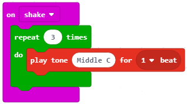</a>
<p><strong>Faza 3</strong></p>
<p>Тестирање и анализа програма.</p>
<p>Да бисмо тестирали програм имамо две могућности:</p>
<blockquote>
<div><ol class="arabic simple">
<li><p>да га покренемо у симулатору кликом на дугме <a class="reference internal" href="_images/96.png"></a>.</p></li>
<li><p>да га пребацимо на микробит. Да бисмо програм пребацили на микробит треба да га прикачимо на рачунар коришћењем USB кабла. Кликом на дугме <a class="reference internal" href="_images/97.png"></a> преузмите .hex фајл на ваш рачунар. Превлачењем фајла на микробит, уређај је спреман за рад.</p></li>
</ol>
</div></blockquote>
<p>Након тестирања и анализе, постоји грешка, јасно треба да се чује три пута звук.</p>
<p><strong>Грешка 1.</strong> Не чује се јасно понављање звука.</p>
<p><strong>Исправљање грешака.</strong> Да бисмо постигли да се јасно звук чује три пута увешћемо блок <em>pause ..</em> из категорије <em>Basic</em>. Поставићемо да је временски интервал након кога се понавља звук 1 секунда (или 1000 милисекунди).</p>
<p>Након исправљеног кода, коначан изглед програма:</p>
<a class="reference internal image-reference" href="_images/155.png">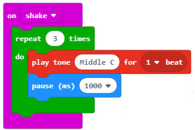</a>
<p>Поново тестирамо програм. Сада он ради како треба.</p>
<p>Хајде да направимо још један програм којим се активира паљење лед диодица на средини екрана микробита све док је температура у просторији мања од 30.</p>
<p><strong>Фаза 1</strong></p>
<p><strong>Разумевање проблема:</strong> Све док је измерена температура мања од 30 пали се лед диода на средини екрана микробита.</p>
<p><strong>Фаза 2</strong></p>
<p>Покрени МејкКод за одабир и слагање блокова у простор за програмирање.
На интернет страници на адреси <a class="reference external" href="https://makecode.microbit.org">https://makecode.microbit.org</a> покрени нов пројекат кликом на дугме New Project <a class="reference internal" href="_images/86.png"></a>.</p>
<p>Да бисмо извршили одређене наредбе (паљење лед диода) док не буде испуњен неки услов (температура мања од 30), у блок <em>forever</em> превлачимо блок <em>while..do..</em>:</p>
<p>Изглед кода:</p>
<a class="reference internal image-reference" href="_images/156.png">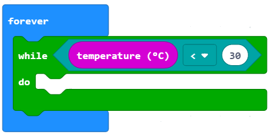</a>
<p>Да бисмо упалили лед диоду на средини екрана, тачније на позицији (2, 2) из менија <em>Led</em> превлачимо блок: <a class="reference internal" href="_images/108.png"></a> .</p>
<p>Коначан изглед програма:</p>
<a class="reference internal image-reference" href="_images/157.png">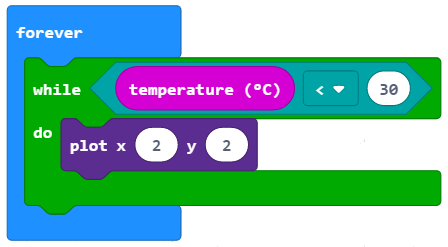</a>
<p><strong>Фаза 3</strong></p>
<p>Тестирање и анализа програма.</p>
<p>Да бисмо тестирали програм имамо две могућности:</p>
<blockquote>
<div><ol class="arabic simple">
<li><p>да га покренемо у симулатору кликом на дугме <a class="reference internal" href="_images/96.png"></a>.</p></li>
<li><p>да га пребацимо на микробит. Да бисмо програм пребацили на микробит треба да га прикачимо на рачунар коришћењем USB кабла. Кликом на дугме <a class="reference internal" href="_images/97.png"></a> преузмите .hex фајл на ваш рачунар. Превлачењем фајла на микробит, уређај је спреман за рад.</p></li>
</ol>
</div></blockquote>
<p><strong>Размисли:</strong></p>
<p>Пажљиво проучи горње блокове. Шта се дешава када температура порасте, и буде већа од 30? Зашто?</p>
<p>Допуни горњи кôд како би лед диода била упаљена само док је температура мања од 30.</p>
<p>Могуће решење: <a class="reference external" href="https://makecode.microbit.org/_92LeH58vY4je">https://makecode.microbit.org/_92LeH58vY4je</a></p>
<p>Сећаш се задатка из Лекције 3 – Унос података, помоћу кога смо укључивали лед диоде на главној дијагонали екрана микробита.</p>
<a class="reference internal image-reference" href="_images/158.png">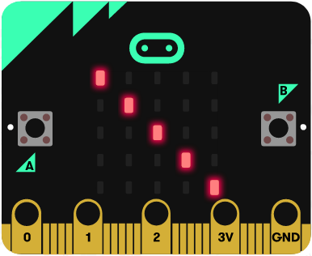</a>
<p><strong>Фаза 1</strong></p>
<p><strong>Разумевање проблема:</strong> Главна дијагонала представља линију која повезује горњи леви угао екрана са доњим десним. Тај задатак смо решили линијским програмом, ређајући блокове <a class="reference internal" href="_images/108.png"></a> из категорије <a class="reference internal" href="_images/109.png"></a> један за другим.</p>
<p>Изглед кода је следећи:</p>
<a class="reference internal image-reference" href="_images/159.png"></a>
<p><strong>Фаза 2</strong></p>
<p>Покрени МејкКод за одабир и слагање блокова у простор за програмирање.</p>
<p>На интернет страници на адреси <a class="reference external" href="https://makecode.microbit.org">https://makecode.microbit.org</a> покрени нов пројекат кликом на дугме New Project <a class="reference internal" href="_images/86.png"></a>.</p>
<p>Међутим, овај задатак ћемо решити елегантније користећи блок <a class="reference internal" href="_images/160.png">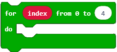</a> из категорије <em>Loops</em>. Овај блок се користи за понављање дела програма онолико пута колико желите (граница се означава у блоку to <a class="reference internal" href="_images/161.png"></a>) користећи променљиву <a class="reference internal" href="_images/162.png"></a>. (О променљивима ћемо причати детаљније у следећој лекцији, можеш их схватити као „чуваре“ различитих вредности, било нумеричких било текстуалних).</p>
<p>У блок <em>forever</em> превлачимо блок <em>for .. from to …</em> Граница од које креће бројање је 0, а до које се завршава је 4, зато што је у овом случају положај лед диода на екрану микробита дефинисан по хоризонтали и вертикали од 0 до 4.</p>
<p>Изглед кода:</p>
<a class="reference internal image-reference" href="_images/163.png">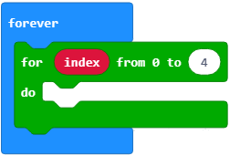</a>
<p>У горњи блок превучемо <a class="reference internal" href="_images/108.png"></a> из категорије <a class="reference internal" href="_images/109.png"></a>. Координату x дефинишемо превлачењем <a class="reference internal" href="_images/162.png"></a>, координату y дефинишемо превлачењем <a class="reference internal" href="_images/162.png"></a>.</p>
<p>Корак по корак извршавање блока <em>for .. from to …</em></p>
<table class="colwidths-given docutils align-default" id="id4">
<caption><span class="caption-text">Tабела компоненти Микробита</span><a class="headerlink" href="#id4" title="Permalink to this table">¶</a></caption>
<colgroup>
<col style="width: 33%" />
<col style="width: 33%" />
<col style="width: 33%" />
</colgroup>
<thead>
<tr class="row-odd"><th class="head"><p>Променљива <a class="reference internal" href="_images/162.png"></a></p></th>
<th class="head"><p>Блока <a class="reference internal" href="_images/108.png"></a></p></th>
<th class="head"><p>Извршавање кода на екрану микробита</p></th>
</tr>
</thead>
<tbody>
<tr class="row-even"><td><p>index = 0</p></td>
<td><p><a class="reference internal" href="_images/108.png"></a></p></td>
<td><p><a class="reference internal" href="_images/164.png">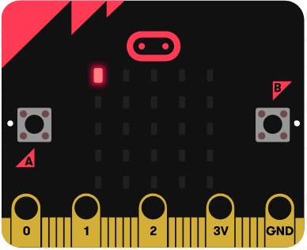</a></p></td>
</tr>
<tr class="row-odd"><td><p>index = 1</p></td>
<td><p><a class="reference internal" href="_images/165.png"></a></p></td>
<td><p><a class="reference internal" href="_images/166.png">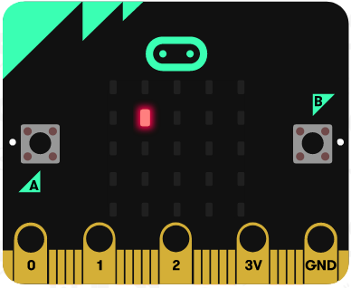</a></p></td>
</tr>
<tr class="row-even"><td><p>index = 2</p></td>
<td><p><a class="reference internal" href="_images/167.png"></a></p></td>
<td><p><a class="reference internal" href="_images/168.png">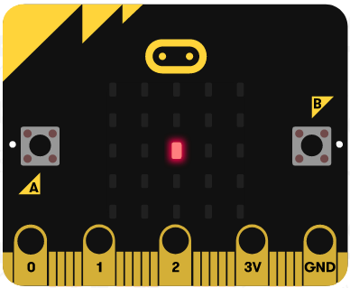</a></p></td>
</tr>
<tr class="row-odd"><td><p>index = 3</p></td>
<td><p><a class="reference internal" href="_images/169.png">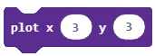</a></p></td>
<td><p><a class="reference internal" href="_images/170.png">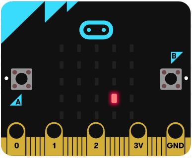</a></p></td>
</tr>
<tr class="row-even"><td><p>index = 4</p></td>
<td><p><a class="reference internal" href="_images/171.png"></a></p></td>
<td><p><a class="reference internal" href="_images/172.png">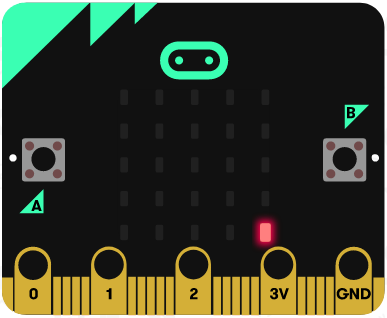</a></p></td>
</tr>
</tbody>
</table>
<p>Блок ће се поновити пет пута.</p>
<p>Коначан изглед кода:</p>
<a class="reference internal image-reference" href="_images/173.png">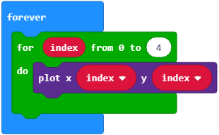</a>
<p><strong>Фаза 3</strong></p>
<p>Тестирање и анализа програма.</p>
<p>Да бисмо тестирали програм имамо две могућности:</p>
<p>1       да га покренемо у симулатору кликом на дугме <a class="reference internal" href="_images/96.png"></a>.</p>
<p>2       да га пребацимо на микробит. Да бисмо програм пребацили на микробит треба да га прикачимо на рачунар коришћењем USB кабла. Кликом на дугме <a class="reference internal" href="_images/97.png"></a> преузмите .hex фајл на ваш рачунар. Превлачењем фајла на микробит, уређај је спреман за рад.</p>
<a class="reference internal image-reference" href="_images/174.png"></a>

    <div class="course-box course-box-info">
        <div class="course-content">
            <p>
<dl class="simple">
<dt><strong>Шта смо научили?</strong></dt><dd><ul class="simple">
<li><p>да програми код којих се одређени блокови понављају више пута називају се циклични програми или програми понављања.</p></li>
<li><p>да постоје различити блокови за понављање (бројачки, бесконачни, условни) и када се они користе.</p></li>
<li><p>да се бројачки извршавају када тачно знамо колико ће се пута поновити нека радња.</p></li>
<li><p>да се условна понављања користимо када не знамо колико је пута потребно извршити неку радњу. Тај блок се извршава све док не буде испуњен одређени услов.</p></li>
<li><p>које вредности узима index у блоку понављања, тачније која је почетна, а која крајња вредност.</p></li>
</ul>
</dd>
</dl>

    </p></div></div>
<div class="section" id="id3">
<h2>Квиз<a class="headerlink" href="#id3" title="Permalink to this headline">¶</a></h2>

            <div class="course-box course-box-question course-content">
            <ul data-component="multiplechoice" data-multipleanswers="false"  id="L9P1">
            <p>Q-195: Пажљиво проучи код:</p>
<a class="reference internal image-reference" href="_images/175.png">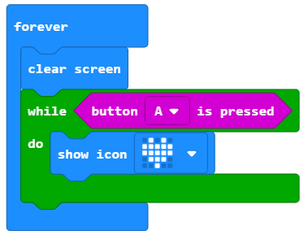</a>
<p>Шта ће бити приказано на микробиту?</p>

            <li data-component="answer"  id="L9P1_opt_a">На екрану ће бити приказано срце.</li><li data-component="feedback" id="L9P1_opt_a">Твој одговор није тачан. Покушај поново!</li>
            
            <li data-component="answer" data-correct id="L9P1_opt_b">На екрану ће бити приказано срце све док је дугме А притиснуто.</li><li data-component="feedback" id="L9P1_opt_b">Браво! Твој одговор је тачан.</li>
            
            <li data-component="answer"  id="L9P1_opt_c">На екрану ће бити приказано срце све док је температура већа од 30.</li><li data-component="feedback" id="L9P1_opt_c">Твој одговор није тачан. Покушај поново!</li>
            
            <li data-component="answer"  id="L9P1_opt_d">На екрану неће бити приказано ништа.</li><li data-component="feedback" id="L9P1_opt_d">Твој одговор није тачан. Покушај поново!</li>
            

            </ul>
            </div>
            
            <div class="course-box course-box-question course-content">
            <ul data-component="multiplechoice" data-multipleanswers="false"  id="L9P2">
            <p>Q-196: Пажљиво проучи код:</p>
<a class="reference internal image-reference" href="_images/176.png">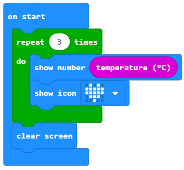</a>
<p>Шта ће бити приказано на микробиту?</p>

            <li data-component="answer"  id="L9P2_opt_a">На екрану ће бити приказана измерена тренутно вредност температуре и срце.</li><li data-component="feedback" id="L9P2_opt_a">Твој одговор није тачан. Покушај поново!</li>
            
            <li data-component="answer"  id="L9P2_opt_b">На екрану ће три пута бити приказано срце.</li><li data-component="feedback" id="L9P2_opt_b">Твој одговор није тачан. Покушај поново!</li>
            
            <li data-component="answer" data-correct id="L9P2_opt_c">На екрану ће три пута бити приказана измерена тренутна вредност температура и срце.</li><li data-component="feedback" id="L9P2_opt_c">Браво! Твој одговор је тачан.</li>
            
            <li data-component="answer"  id="L9P2_opt_d">На екрану неће бити приказано ништа.</li><li data-component="feedback" id="L9P2_opt_d">Твој одговор није тачан. Покушај поново!</li>
            

            </ul>
            </div>
            
            <div class="course-box course-box-question course-content">
            <ul data-component="multiplechoice" data-multipleanswers="false"  id="L9P3">
            <p>Q-197: Пажљиво проучи код:</p>
<a class="reference internal image-reference" href="_images/177.png">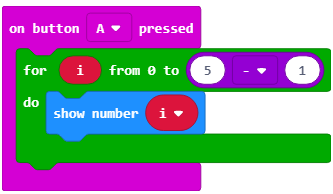</a>
<p>Шта ће бити приказано на микробиту?</p>

            <li data-component="answer" data-correct id="L9P3_opt_a">На екрану ће бити редом бројеви од 0 до 4.</li><li data-component="feedback" id="L9P3_opt_a">Браво! Твој одговор је тачан.</li>
            
            <li data-component="answer"  id="L9P3_opt_b">На екрану ће бити приказан број 5.</li><li data-component="feedback" id="L9P3_opt_b">Твој одговор није тачан. Покушај поново!</li>
            
            <li data-component="answer"  id="L9P3_opt_c">На екрану ће пет пута бити приказан број 4.</li><li data-component="feedback" id="L9P3_opt_c">Твој одговор није тачан. Покушај поново!</li>
            
            <li data-component="answer"  id="L9P3_opt_d">На екрану неће бити приказано ништа.</li><li data-component="feedback" id="L9P3_opt_d">Твој одговор није тачан. Покушај поново!</li>
            

            </ul>
            </div>
            
            <div class="course-box course-box-question course-content">
            <ul data-component="multiplechoice" data-multipleanswers="false"  id="L9P4">
            <p>Q-198: Пажљиво проучи код:</p>
<a class="reference internal image-reference" href="_images/178.png">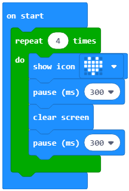</a>
<p>Шта ће бити приказано на микробиту?</p>

            <li data-component="answer"  id="L9P4_opt_a">На екрану ће се четири пута појавити срце (симулација рада срца).</li><li data-component="feedback" id="L9P4_opt_a">Твој одговор није тачан. Покушај поново!</li>
            
            <li data-component="answer"  id="L9P4_opt_b">На екрану ће се приказати срце.</li><li data-component="feedback" id="L9P4_opt_b">Твој одговор није тачан. Покушај поново!</li>
            
            <li data-component="answer" data-correct id="L9P4_opt_c">На екрану неће бити приказано ништа.</li><li data-component="feedback" id="L9P4_opt_c">Браво! Твој одговор је тачан.</li>
            

            </ul>
            </div>
            </div>
</div>


  
      <div class="col-md-12">
<ul class="pager">
</ul>

<!-- <ul class="pager"> -->
    <!-- -->
    <!-- -->
<!-- </ul> -->

<script type="text/javascript">

  $('#relations-prev').tooltip({'placement':'right', 'selector': '', 'delay': { show: 100, hide: 50}});
  $('#relations-next').tooltip({'placement':'left', 'selector': '', 'delay': { show: 100, hide: 50}});

</script>
</div>
  
</div>
<footer class="footer col-md-12">
    <div class="container">
        <div class="text-center">
            <hr>
            <p class="text-muted">
                <span class="pull-left">&copy; 2019 Petlja (Created using  <a href="https://pypi.org/project/Sphinx/">Swinx</a>, <a href="http://runestoneinteractive.org/">RunestoneComponents</a> and <a href="https://github.com/Petlja/PetljaDoc">PetljaDoc</a>)</span>
            </p>
        </div>
    </div>
</footer>


<script type="text/javascript">
  var _gaq = _gaq || [];
  _gaq.push(['_setAccount', 'UA-32029811-1']);
  _gaq.push(['_trackPageview']);

  (function() {
    var ga = document.createElement('script'); ga.type = 'text/javascript'; ga.async = true;
    ga.src = ('https:' == document.location.protocol ? 'https://ssl' : 'http://www') + '.google-analytics.com/ga.js';
    var s = document.getElementsByTagName('script')[0]; s.parentNode.insertBefore(ga, s);
  })();
</script>


  </body>
</html>